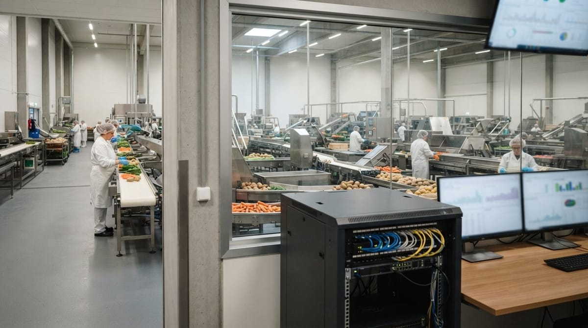

Qué debe exigir TI a un software de calidad alimentaria

Cuando calidad elige una herramienta nueva, TI suele entrar tarde y con una pregunta incómoda: ¿esto es seguro, integrable y mantenible? Si te preguntas qué debe exigir TI a un software de calidad, la respuesta va más allá de una demo bonita. Hay que revisar cómo se protegen los datos, cómo se conecta con el resto de sistemas, dónde se ejecuta y quién puede hacer qué. Esta guía te ofrece un criterio claro para evaluar a cualquier proveedor sin perder de vista la realidad de una planta agroalimentaria.
Qué debe exigir TI a un software de calidad: los cuatro criterios que no se negocian
En una industria alimentaria, el software de calidad guarda autocontroles, APPCC, auditorías, no conformidades, resultados de laboratorio y registros de trazabilidad. Son datos críticos para la inocuidad y para superar auditorías. Por eso, antes de comparar funcionalidades, conviene que TI y calidad acuerden unos mínimos en cuatro áreas:
- Protección y continuidad de los datos, incluidas las copias de seguridad.
- Capacidad de integración con ERP, sensores y otros sistemas.
- Modelo de despliegue adaptado a la conectividad real de cada planta.
- Control de accesos con trazabilidad completa de las acciones.
Los esquemas de certificación reconocidos por la Global Food Safety Initiative (GFSI, s.f.) exigen que los registros sean fiables, estén disponibles y no se manipulen. Esa exigencia aterriza directamente en los requisitos técnicos que vienen a continuación.
Seguridad de los datos: cifrado, backups y continuidad
La seguridad de los datos en un software de calidad es el primer filtro. Si un registro desaparece o se altera, puedes perder la evidencia de que un lote se controló correctamente. Pide al proveedor respuestas concretas sobre estos puntos:
- Cifrado en tránsito y en reposo: comunicaciones protegidas con protocolos actuales y datos almacenados cifrados.
- Autenticación robusta: doble factor y, si tu empresa lo usa, inicio de sesión único (SSO) con tu directorio corporativo.
- Ubicación de los datos: dónde se alojan, quién los trata y qué subencargados intervienen, con las garantías de protección de datos que corresponden.
- Gestión de vulnerabilidades: pruebas de seguridad periódicas, parches y un procedimiento de notificación de incidentes.
Respecto al backup en un software de calidad alimentaria, no basta con saber que existe. Pregunta por la frecuencia de las copias, el tiempo de retención, si se almacenan en una ubicación distinta a la principal y, sobre todo, si se prueban las restauraciones. Define también dos cifras con el proveedor: el RPO (cuántos datos aceptas perder) y el RTO (cuánto tiempo puedes estar sin servicio). En una planta con turnos continuos, una caída de varias horas puede dejar registros en papel que luego hay que volcar.
Si quieres profundizar, tienes más detalle en nuestros artículos sobre seguridad de los datos en un software de calidad y sobre copias de seguridad y continuidad.
Integraciones: API abierta, ERP, IoT y RPA
Un software de calidad aislado genera doble trabajo: alguien acaba copiando datos de un sistema a otro. Las integraciones por API en un software de calidad evitan ese problema y reducen errores de transcripción. TI debería exigir:
- API documentada y estable: con versiones, autenticación segura y límites de uso claros. Pide ver la documentación antes de firmar.
- Conexión con el ERP: para sincronizar artículos, lotes, proveedores y órdenes de producción sin cargas manuales.
- Entrada de datos IoT: sondas de temperatura, balanzas, detectores de metales u otros equipos que registren automáticamente.
- Compatibilidad con RPA: cuando un sistema legado no ofrece API, la automatización de procesos permite tender puentes sin desarrollos a medida costosos.
- Webhooks o eventos: para avisar a otros sistemas cuando se abre una no conformidad o caduca un documento.
Pregunta también quién mantiene las integraciones cuando cambia el ERP o se actualiza una versión. Es un coste oculto frecuente. Puedes ampliar este punto en integraciones por API en un software de calidad.
Despliegue: nube, on-premise u offline en planta
No hay un modelo universal. La decisión depende de tu política corporativa, de la conectividad de cada centro y del equipo que tengas para mantener la infraestructura.
- Nube (SaaS): actualizaciones automáticas, menor carga de mantenimiento y escalado sencillo. Exige confiar en la disponibilidad y las certificaciones del proveedor.
- On-premise: más control sobre la infraestructura, pero TI asume parches, copias, hardware y disponibilidad.
- Modo offline o con conectividad limitada: imprescindible en cámaras, almacenes, campo o zonas de planta con mala cobertura. El software debe permitir registrar sin conexión y sincronizar después sin perder ni duplicar datos.
Muchas empresas acaban en un modelo mixto: aplicación en la nube y captura offline en planta. Valora cómo se resuelven los conflictos de sincronización y cómo queda el sello de fecha y hora de cada registro. Lo analizamos en software de calidad en la nube vs. on-premise.
Roles, permisos y trazabilidad de accesos
La trazabilidad no solo se aplica al producto. También debe aplicarse a la información: quién creó, modificó o aprobó cada registro. El marco europeo de legislación alimentaria establece la obligación de garantizar la trazabilidad (Reglamento [CE] 178/2002, 2002) en todas las etapas de la cadena, y un sistema de gestión con registros poco fiables debilita esa garantía.
Estos son los requisitos que TI debería comprobar:
- Roles granulares: permisos por función, centro, línea o tipo de documento, no solo «administrador» y «usuario».
- Principio de mínimo privilegio: cada persona ve y edita únicamente lo que necesita.
- Registro de auditoría inalterable: con usuario, fecha, hora, valor anterior y valor nuevo en cada cambio.
- Firmas y aprobaciones: flujos que identifiquen a quien valida y eviten que una misma persona cree y apruebe un registro crítico.
- Gestión del ciclo de vida de usuarios: altas, bajas y cambios de puesto sincronizados con el directorio corporativo, algo clave con personal temporal o rotación alta.
Consulta más criterios en roles y permisos en un software de calidad.
Cómo convertir estos criterios en una evaluación práctica
Para que la conversación entre calidad y TI sea productiva, lleva a la reunión con el proveedor un cuestionario breve y pide respuestas por escrito:
- ¿Dónde se alojan los datos y qué certificaciones de seguridad tiene la infraestructura?
- ¿Cuáles son el RPO y el RTO garantizados, y cuándo se probó la última restauración?
- ¿Existe API documentada y qué integraciones con ERP o equipos IoT ya están en producción?
- ¿Qué ocurre si una planta pierde conexión durante un turno completo?
- ¿Puedo exportar todos mis datos en un formato estándar si dejo de usar el servicio?
- ¿Cómo se auditan los accesos y durante cuánto tiempo se conservan los logs?
Pide además una prueba piloto en una línea o planta real. Es la mejor forma de comprobar en pocas semanas si la herramienta aguanta el ritmo de producción, si las integraciones funcionan y si los usuarios la adoptan sin fricción.
Conclusión
Saber qué debe exigir TI a un software de calidad evita sorpresas costosas después de la implantación. Un buen sistema protege los datos con cifrado y copias comprobadas, se integra con tu ecosistema mediante API, se adapta a la conectividad de cada planta y deja rastro de cada acción de cada usuario. Si estos cuatro bloques están resueltos, calidad podrá centrarse en lo importante: garantizar la inocuidad y llegar a las auditorías con evidencias sólidas.
Referencias
- Global Food Safety Initiative. (s.f.). Global Food Safety Initiative (GFSI). https://mygfsi.com/
- Reglamento (CE) n.o 178/2002 del Parlamento Europeo y del Consejo, de 28 de enero de 2002, por el que se establecen los principios y los requisitos generales de la legislacion alimentaria. (2002). https://eur-lex.europa.eu/eli/reg/2002/178/oj?locale=es